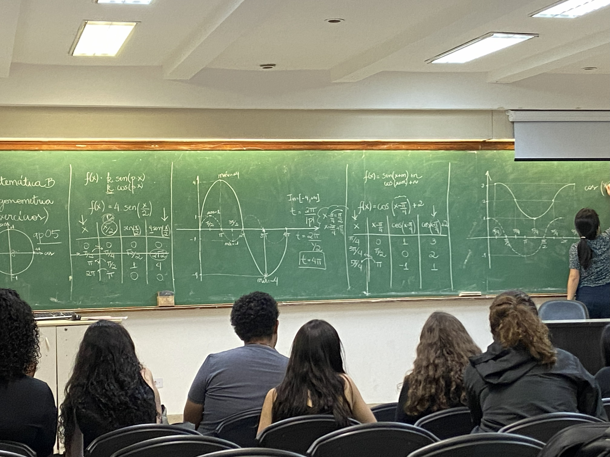
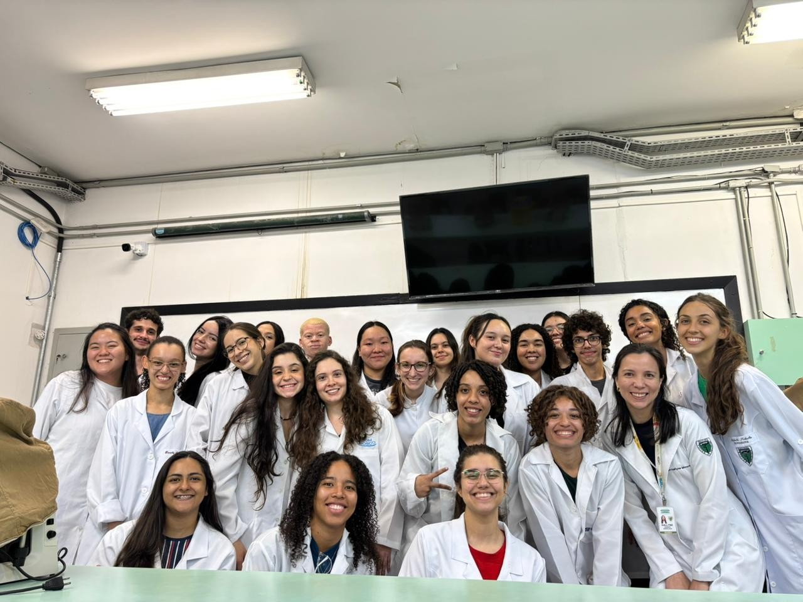
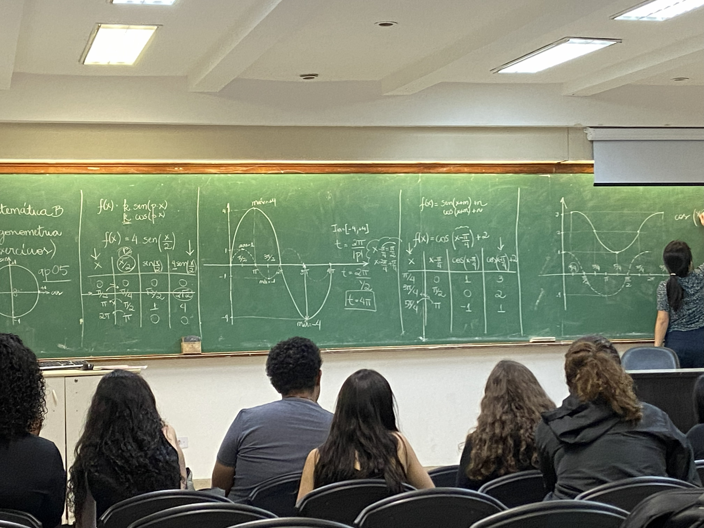
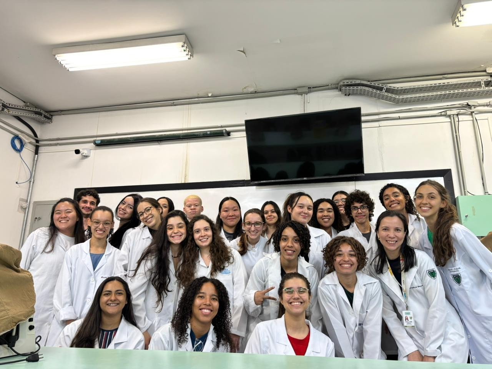

Público-alvo: Alunos de baixa renda/ escolas públicas que estão no 3° ano do Ensino Médio ou já concluíram e querem uma oportunidade para preparar para os grandes vestibulares do país.
O Cursinho Pré-Vestibular Jeannine Aboulafia (CUJA) é um projeto de ação social vinculado à Universidade
Federal de São Paulo (Unifesp), no qual atua como um cursinho popular há mais de 20 anos com
objetivo é auxiliar, de forma gratuita, os alunos de escolas públicas e/ou pertencentes a classes
sociais menos favorecidas a se prepararem para os vestibulares e chegarem ao ensino superior. Assim,
são disponibilizados materiais do sistema ETAPA e aulas presenciais, no horário noturno, com apoio pedagógico
para plantão de dúvidas ou para apoiar na carreira acadêmica, onde os professores são os próprios universitários,
além disso, existem simulados constantes para prática dos vestibulares mais concorridos de São Paulo e eventos para
conectar os alunos entre si.
O processo seletivo consiste em 3 fases:
1. Fazer inscrição online no site oficial do CUJA;
2. Responder o questionário socioeconômico também disponibilizado no site;
3. Realizar a prova de seleção presencialmente, no horário e local especificado. Essa prova é de conhecimentos gerais com 60 questões.
Para conhecer detalhadamente sobre cada o processo seletivo do Cuja, entre no site oficial.
Clique aqui para conhecer o site oficial
 


